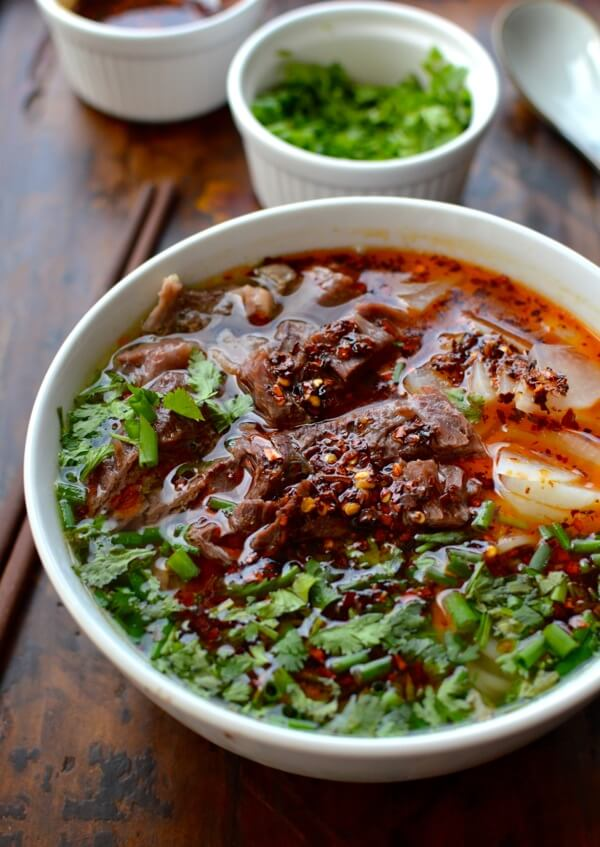
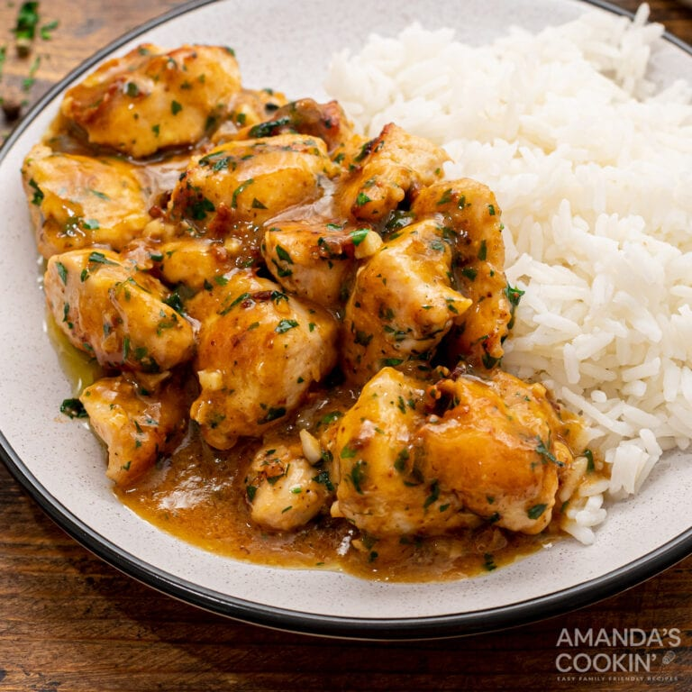
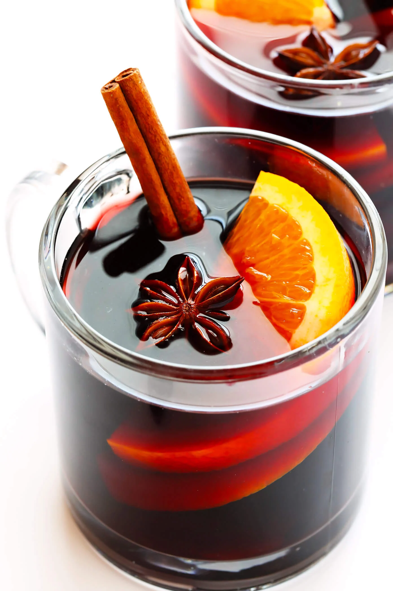
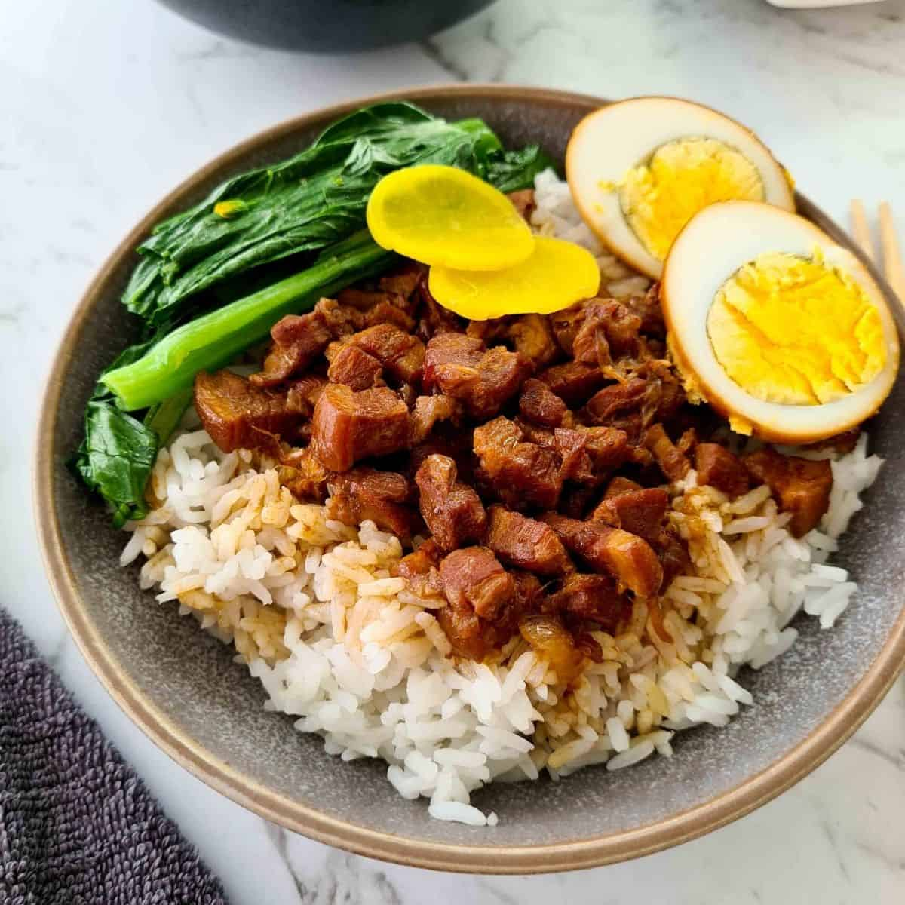

Skip to Main Content
Travel
Lanzhou Beef Noodle Soup

- 7 star anise
- 12 cloves
- 1 cinnamon stick
- 5 bay leaves
- 6 large slices of sand ginger
- 1 1/2 teaspoons fennel seeds
- 1 teaspoon cumin seeds
- 2 teaspoons Sichuan peppercorns
- 1 1/2 teaspoons white peppercorns
- 5 licorice root slices (optional but very much recommended)
- 3 pieces dried orange peel
- 1 black cardamom
Double Chocolate Cookies

- Sugar: The recipe starts with 1 ½ cups white sugar.
- Butter: Beat the sugar with two sticks of softened butter.
- Eggs: Two eggs lend moisture and act as a binding agent, which means they help hold the dough together.
- Vanilla: Vanilla extract enhances the overall flavor of the chocolate chocolate chip cookies.
- Flour: All-purpose flour gives the cookie dough structure.
- Cocoa powder: They wouldn’t be chocolate chocolate chip cookies without cocoa powder!
- Baking soda: Baking soda acts as a leavener, which means it helps the cookies rise.
- Salt: A pinch of salt enhances the overall flavor, but it won’t make the cookies taste salty.
- Chocolate chips: You’ll need two cups of semisweet chocolate chips.
- Walnuts (optional): Walnuts are optional, but they add welcome crunch.
Garlic Chicken

- 3 boneless, skinless chicken breast halves (each about 7 ounces), cut into 1- to 1-1/2 inch cubes
- 1 Tablespoon flour
- 1/2 teaspoon salt
- 1/2 teaspoon freshly ground black pepper
- 2 Tablespoons good olive oil
- 1 Tablespoon chopped garlic
- 3 Tablespoons chopped fresh parsley
- 2 Tablespoons unsalted butter
- 1 lemon, quartered (optional, serve on the side)
Mulled Wine

- 4 cups dry red wine
- 2 (2 inch) pieces cinnamon sticks
- 1 teaspoon whole cloves
- 1 teaspoon whole allspice berries
- 1 large strip of lemon peel
- 1 large strip of orange peel
- 2 tablespoons sugar, or more to taste
Braised Pork Rice

- Pork belly with skin on, cut into strips
- Shallots (or red onion), thinly sliced, plus oil for frying
- Shiitake mushrooms, rehydrated and diced
- Eggs
- Garlic, minced
- Rock sugar (or regular sugar)
- Light & dark soy sauce
- Shaoxing rice wine (skip for an alcohol-free version)
- Chinese five-spice powder & white pepper
- Rice
- Green vegetable